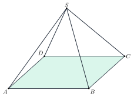

Thử nghiệm hệ thống đồ thị và hình vẽ
Trang này do tools/make_graph_demo.py sinh ra; mỗi hình là một cấu hình mẫu (xem docs/GRAPH.md).
1. Hàm đa thức: cực trị, điểm uốn, đồng biến – nghịch biến
2. Hàm phân thức: tiệm cận đứng và tiệm cận xiên (không nối qua tiệm cận)
3. Hàm lượng giác: trục chia theo π
4. Hàm tan: ngắt nhánh tại x = π/2 + kπ
5. Hàm mũ và logarit (đối xứng qua y = x, tỉ lệ 1:1)
6. Hàm căn thức, trị tuyệt đối, hàm từng đoạn
7. Tham số bằng thanh trượt: y = ax² + bx + c
8. Tiếp tuyến di động
9. Hình học phẳng: đường cao, trung tuyến, phân giác (kéo các đỉnh)
10. Đường tròn và tiếp tuyến; đường song song
11. Hình không gian (TikZ → SVG, hình tĩnh): chóp S.ABCD
